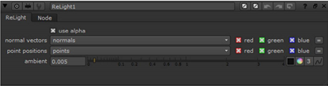

用导航打开主题
使用 3D 灯光重新显示 2D 图像
“重点亮” 节点拍摄包含法线和点位置路径的 2D 图像，并允许您使用 3D 点光源重新点亮该图像。基本上，Relight 绕过了返回到 3D 应用程序并重新渲染照明的需要，提供了一种在 2D 环境中重新点亮 3D 场景的快速交互式方式。
Relight 的工作原理是使用存储在单独图像通道中的法线和点位置通道将 3D 着色器应用于 2D 图像, 并允许您附着和操作 3D 点光源 (或通过场景节点的多个光源)。
注意:
重新点亮仅适用于灯光节点设置为
轻型类型
>
点
.
使用重点亮重新点亮 2D 图像的步骤
|
|
1。
|
从
3D
>
灯光
菜单，选择
重新点亮
将节点添加到脚本中。
|
|
|
2.
|
读取包含法线和点位置路径的 2D 图像，并将其连接到
颜色
节点的输入。
|
提示:
如果位置传递和法线向量包含在单独的图像中，则可以使用 ShuffleCopy 节点将它们组合起来，该节点通过
颜色
输入。
可以使用中的 DepthGenerator 节点创建法线和点位置路径
NukeX
,例如。请参阅
生成深度图
.
|
|
3.
|
在 “重点亮属性” 面板中，从
正常向量
下拉菜单。
|
|
|
4.
|
从中选择包含点位置信息的通道
点位置
下拉菜单。
|

|
|
5.
|
连接灯光节点
轻型类型
>
点
到
灯光
输入，或通过场景节点的多个灯光。
|
|
|
6.
|
将用于渲染原始场景的相机连接到
凸轮
输入。
|
|
|
7.
|
将着色器 (例如，一个 Phong 节点) 附加到
材料
输入。根据您附加的着色器类型，确保您已经为其定义了必要的属性。有关定义材料属性的信息，请参阅
对象材质属性
.
|
注意:
相机输入在灯光输入连接到灯光或场景节点之前不会出现，材质输入在相机输入连接之前不会出现。
|
|
9.
|
如果图像在
颜色
输入包含一个 alpha 通道，你想用它作为遮罩来限制重点亮的效果，检查
使用 alpha
.
|
|
|
10.
|
如果需要，请调整
环境
滑块设置场景的全局环境光级别。
|
|
|
11。
|
要将重点亮节点的照明信息与原始 2D 图像组合，请使用合并节点
操作
设置为
乘
。将重点亮节点连接到合并节点
一个
输入和您的 2D 图像到其
B
输入。
|